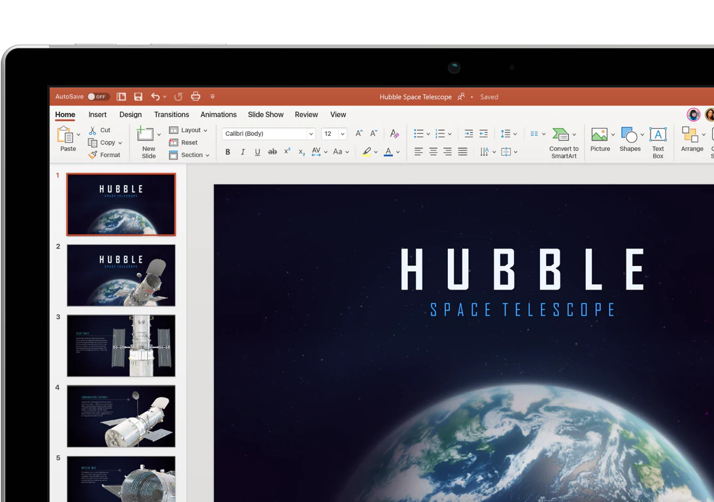
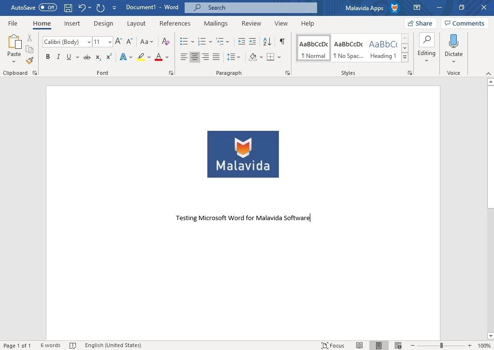
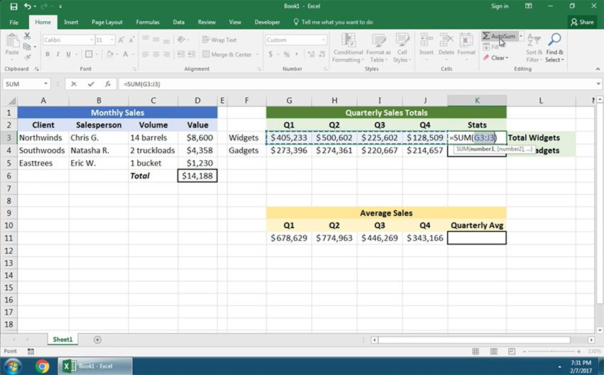

Power Point - Powerpoint — também chamado de PPT — é um dos softwares mais populares da Microsoft. Trata-se de um programa dedicado à criação de presentações, que podem ser usadas para os mais variados fins: reuniões, palestras, negociações comerciais, apresentações corporativas… A lista praticamente não tem fim!
Word - O Microsoft Word é um programa destinado à criação de documentos, vulgarmente conhecido como processador de texto.
Excel - A função do Excel, é organizar e formatar folhas de cálculo, com fórmulas matemáticas, trazendo informatização para a organização de dados, que antes era feita de forma manual em papéis, pastas e gaveteiros.
